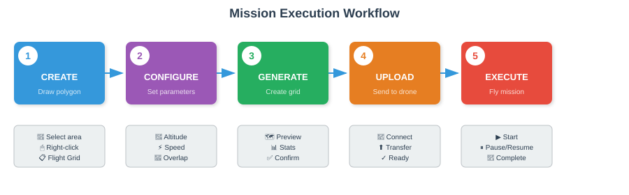

Flight Missions
⏱️ 75 minutesLearning Objectives
- Create flight grid missions for systematic area searches
- Choose the right search pattern for each scenario
- Execute and monitor autonomous missions
- Handle mission interruptions and emergencies
11.1 Introduction to Flight Missions
Eagle Eyes provides powerful autonomous flight capabilities for systematic SAR operations:
- Flight Grid Planning - Create search patterns over defined areas
- Fly-to-Waypoint - Quick flights to specific locations
- Mission Control - Execute and monitor missions in-app (SDK5)
- KMZ Export - Export for DJI Pilot 2 (SDK4 fallback)
11.2 Flight Grid Planning
Create systematic coverage patterns over search areas.

Screenshot: Generate Flight Grid dialog with all parameters
Accessing the Dialog
- Draw or select a polygon on the map
- Tap the polygon to select it
- Tap menu (⋮) or right-click
- Select Generate Flight Grid
Configuration Parameters
| Parameter | Range | Description |
|---|---|---|
| Altitude | 10-500m | Flight altitude AGL |
| Flight Speed | 1-15 m/s | Speed between waypoints |
| Line Spacing | Variable | Distance between flight lines |
| Side Overlap | 0-90% | Left-right camera overlap |
| Front-Back Overlap | 0-90% | Forward camera overlap |
| Gimbal Pitch | -90° to 0° | Camera angle (-90° = straight down) |
Camera Modes
| Mode | Ratio | Use Case |
|---|---|---|
| Photo | 4:3 | Standard mapping/search |
| Video | 16:9 | Continuous recording |
| IR Photo | 4:3 | Thermal mapping (M3T/M30T) |
| IR Video | 16:9 | Thermal video (M3T/M30T) |
| Fly-Only | N/A | No camera actions |
Terrain Following
- Standard - Pre-calculated waypoint elevations
- Live - Real-time adjustment (M4T only)
Real-Time Calculations
As you adjust parameters, the dialog shows:
- Swath width
- Estimated photo count
- Flight time estimate
- Total distance
- Area coverage
11.3 Search Patterns
Eagle Eyes supports three search patterns optimized for different scenarios.

Grid Pattern (Parallel Lines)
Screenshot: Grid pattern preview on map
Best For: Systematic area searches, mapping, maximum coverage
- Parallel flight lines covering entire area
- Even coverage throughout
- Predictable path, easy to track
Expanding Square Pattern
Best For: Point Last Seen (PLS) searches, unknown direction of travel
- Spiral from center outward
- Covers high-probability areas first
- Expands systematically
Star Pattern (Radial Spokes)
Best For: Trail intersections, 360° quick coverage
- Radial spokes from center point
- Quick coverage in all directions
- Best combined with other patterns
Pattern Selection Guide
| Scenario | Pattern | Reason |
|---|---|---|
| Lost hiker, unknown direction | Expanding Square | Starts at PLS, covers all directions |
| Known search area | Grid | Systematic, complete coverage |
| Trail junction | Star | Quick coverage of all trails |
| Water search (known current) | Grid (oriented) | Covers drift zone |
11.4 Fly-to-Waypoint Missions
Simple point-to-point flights for investigations and targeted searches.
Screenshot: Fly-to-Waypoint dialog
Creating a Fly-to-Waypoint Mission
- Long-press on map destination
- Select Fly to Waypoint
- Set altitude and speed
- Choose waypoint action
- Tap Fly
Waypoint Actions
| Action | Description |
|---|---|
| Hover | Hold position, no camera action |
| Take Photo | Capture single photo |
| Start Video | Begin video recording |
| 360° Photos | Rotate and capture 4 directional photos |
11.5 Mission Execution (SDK5)
For SDK5 drones (Mavic 3, M30 series), execute missions directly from Eagle Eyes.
Screenshot: Mission Control Dialog with checklist
Mission Control Dialog
Shows mission details and controls:
- Mission name and waypoint count
- Total distance and estimated time
- Pre-flight checklist status
- Control buttons
Pre-Flight Checklist
| Item | Requirement |
|---|---|
| ✅ Drone Connected | Active connection to drone |
| ✅ GPS Lock | 4+ satellites acquired |
| ✅ Battery Level | Sufficient for mission |
| ✅ Home Point Set | Valid home location |
All items must be green before starting.
Control Buttons
| Button | Function |
|---|---|
| Upload | Transfer mission to drone |
| Start | Begin mission execution |
| Pause | Pause at current position |
| Resume | Continue from pause point |
| Stop | Abort mission completely |
| Restart | Start mission from beginning |
Mission States
| State | Description |
|---|---|
| Idle | No mission loaded |
| Uploading | Transferring to drone |
| Ready | Ready to start |
| Executing | Flying mission |
| Paused | Holding at waypoint |
| Completed | Mission finished |
Execution Steps
- Open Mission Control after creating mission
- Verify all checklist items are green
- Tap Upload and wait for completion
- Tap Start to begin
- Monitor progress on map and overlay
- Use Pause/Resume as needed
- Mission completes automatically
11.6 KMZ Export & DJI Pilot 2
For SDK4 drones or as a backup, export missions as KMZ files.
Exporting a Mission
- Create flight grid or waypoint mission
- Tap Export to KMZ
- File saves to Downloads folder
- Filename includes timestamp
Using with DJI Pilot 2
- Open DJI Pilot 2
- Go to Flight → Mission
- Tap Import
- Select exported KMZ file
- Review and execute in DJI Pilot 2
11.7 Handling Interruptions
Pause/Resume
- Tap Pause to stop at current position
- Drone hovers and maintains altitude
- Take manual control if needed
- Tap Resume to continue
RTH During Mission
- Mission pauses automatically
- State changes to "Paused by RTH"
- After RTH completes, Resume or Restart
Low Battery
- Monitor battery throughout mission
- Eagle Eyes warns when low
- Consider pausing early
- Auto-RTH may trigger if critical